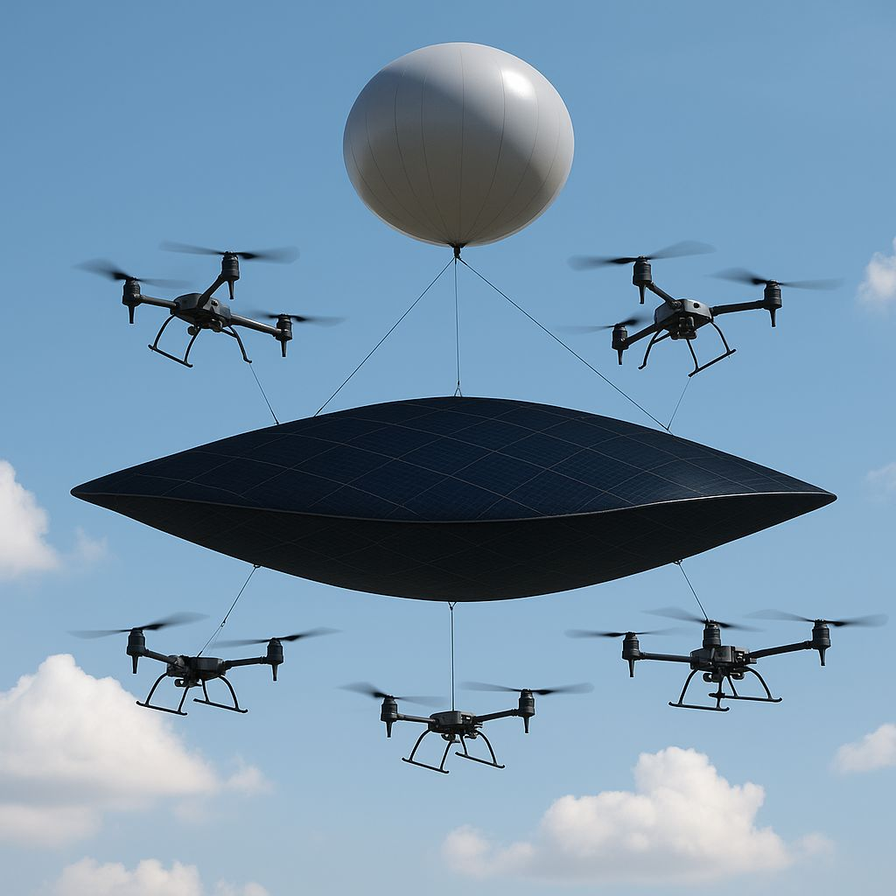

Helionus
Tethered Solar Air Platform — The Bridge to Orbital Energy
A deployable, helium-lifted solar array designed to deliver clean energy and critical communications from just 100–1,000 feet above the ground — and serve as the terrestrial proving ground for ASTRIAN-2.
Specs Snapshot
| Feature | Detail |
|---|---|
| Platform Size | 0.05 km² (50,000 m² solar film) |
| Power Output | 3–5 MW per unit |
| Altitude | 100–1,000 ft (tethered) |
| Lift System | Helium balloon + 6 drone stabilizers |
| Solar Tech | High-quality amorphous silicon |
| Tether | Reinforced power + data cable |
| Ground Station | Modular inverter + battery storage |
| Annual Output (20 units) | 144 GWh/year |
| Pricing (premium zones) | $1.50/kWh |
Why It Matters
- 🚨 Emergency Power: disaster zones, blackouts, and warzones
- 🚐 Proof-of-Concept: validates ASTRIAN-2 orbital systems
- 🏗️ Deployable in 24 Hours: no permanent foundation
- ♻️ Zero-Emissions: off-grid or remote deployment ready
- 💰 >90% Profit Margins: high-yield at scale
Strategic Role in the Portfolio
Helionus is Phase 1 in a two-phase system:
- Phase 1: Earth-based, tethered platform validating all major systems
- Phase 2: ASTRIAN-2 — the orbital solar array capable of beaming power planet-wide



Interested in deploying Helionus? Partner with us for energy resilience, space validation, or tactical field ops.
→ Contact Nocturnal Security
→ Contact Nocturnal Security